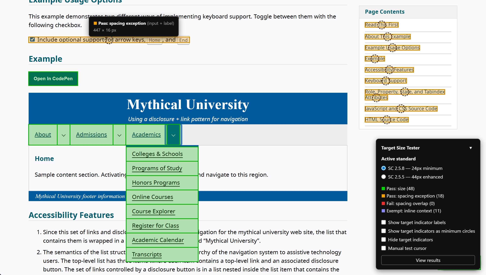

WCAG 2.2 introduced Success Criterion 2.5.8 Target Size (Minimum) (Level AA), which requires the target size of interactive controls to meet a 24×24 CSS pixel minimum, with some exceptions. Success Criterion 2.5.5 Target Size (Enhanced) (Level AAA) raises that bar to 44×44px.
Testing either criterion by hand means inspecting each target individually — checking dimensions, spacing, and applicable exceptions. That gets old fast.
I'd been using Steve Faulkner's target size bookmarklet, which overlays 24px circles on interactive targets and flags overlaps. It's quick, it's practical, and it does exactly what it says. If you want something lightweight and no-frills, it's worth checking out.
I wanted something that went a little further, so I built my own.

Features
- Color-coded indicators on every detected interactive target, with optional labels
- Indicators automatically reposition when you scroll or resize the window
- Switch between Success Criterion 2.5.8 and 2.5.5 mode
- Circle view showing the minimum required size rather than the target's bounding box
- Manual test cursor — a crosshair sized to the active minimum — for targets the bookmarklet might miss
- Results dialog listing every detected target with its conformance result, dimensions, accessible name, and a button to copy its XPath
- Keyboard shortcuts for refreshing overlays (useful for testing dynamic content like dropdown menus) and hiding the legend panel